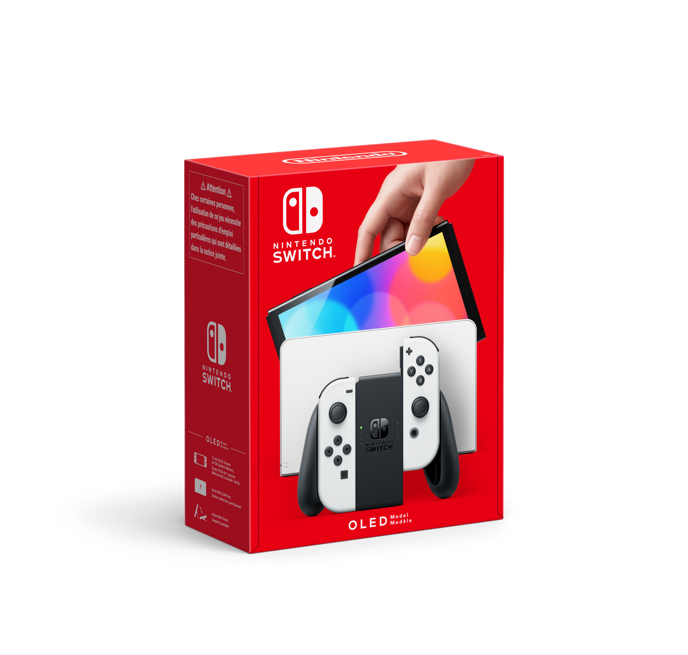
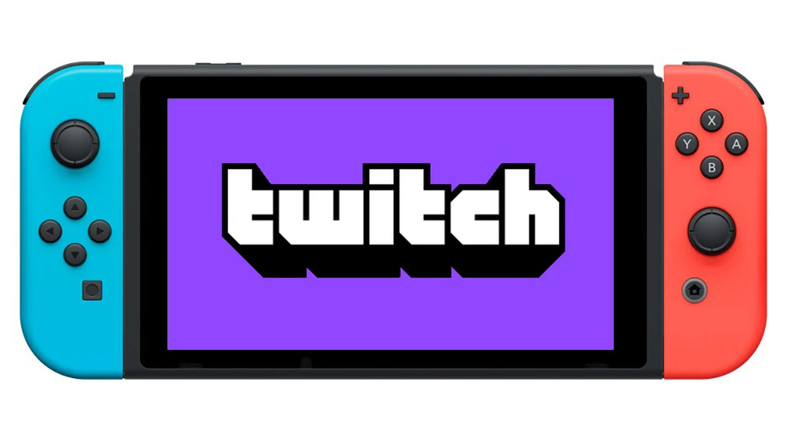

Nintendo službeno predstavio novi model Switcha, nije ono što smo očekivali
Novi model Switcha dolazi gotovo dvije godine nakon što je tvrtka izbacila Lite verziju konzole koja nema mogućnost spajanja na TV, pa se samo može koristiti u 'handheld' načinu rada

Još se u ožujku „šuškalo“ da Nintendo planira izbaciti nadograđeni model Switcha krajem godine i to sa Samsungovim OLED zaslonom rezolucije 720p,
mogućnošću prikazivanja sadržaja u 4K rezoluciji pri spajanju na TV i novim Nvidijinim grafičkim čipom s podrškom za deep learning super sampling (DLSS).
Nintendo je sada službeno i predstavio taj model, koji će, kako se i predviđalo, uistinu imati 7-inčni OLED zaslon, no neće podržavati 4K, niti će imati Nvidijin
grafički čip, što bi moglo biti razočaravajuće za mnoge potencijalne kupce. No, valja istaknuti da su nadogradili internu memoriju, pa će tako novi model konzole dolaziti sa 64 GB prostora.
Izvor:Bug.hr
Twitch konačno stigao na Nintendo Switch
Igrači Switcha konačno su dobili rješenje za ubiti dosadu nakon opsežne sesije igranja Mario Karta ili Animal Crossinga

Korisnici popularne streaming platforme koji posjeduju Nintendovu igraću konzolu Switch, konačno će moći s lakoćom gledati
svoje omiljene streamere, jer je službena Twitch aplikacija od sada dostupna za preuzimanje na eShopu.
Twitch na Switchu radi baš kao što se to od njega i očekuje. Prijenosi se mogu gledati besprijekorno, a zahvaljujući mogućnošću
pretrage prema videoigri ili kategoriji, nije ih teško pronaći. No, ipak postoje neki nedostaci – nije moguće vidjeti chat na zaslonu
Switcha ili na televizoru, već je za to potrebno skenirati QR kod na pametnom telefonu, a ne može se ni streamati direktno s konzole.
Izvor:Bug.hr